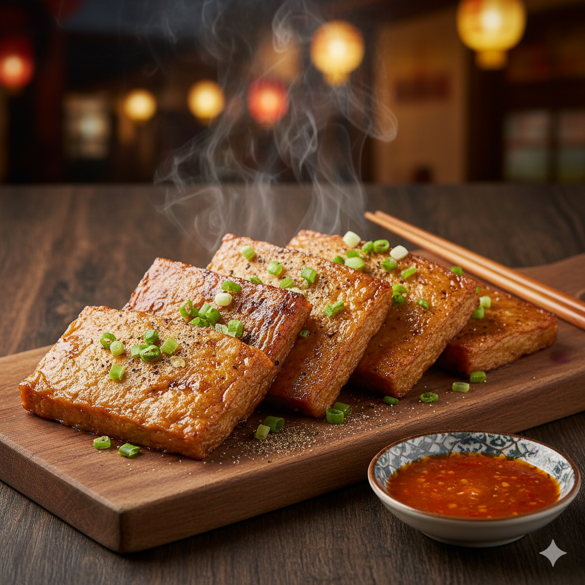

← 回到首頁
4. 炭烤黑輪片

【歷史故事】
黑輪在台灣南部不僅是甜不辣，更是一種手工技藝。高雄漁業豐富，早期利用新鮮魚漿製作手工黑輪片。炭烤黑輪是老高雄人的「台式下午茶」，最經典的吃法就是在路邊攤看著老闆在炭火上不斷翻轉黑輪，烤到表面起泡微焦，撒上花生粉，這是最在地的港都味。
【需要材料】
- 手工厚片黑輪 4-5 片
- 特製烤肉醬（甜麵醬、沙茶、糖）
- 花生粉、細砂糖
- 香菜 少許
【料理方法】
- 準備炭火或預熱烤箱（炭火最香）。
- 將黑輪片放在火上慢烤，不斷翻面防止焦黑，烤至黑輪片受熱膨脹。
- 兩面均勻刷上特製烤肉醬，繼續烤至醬汁乾縮入味。
- 起鍋前撒上厚厚的一層花生粉，並點綴香菜，趁熱食用感受外酥內Q的口感。